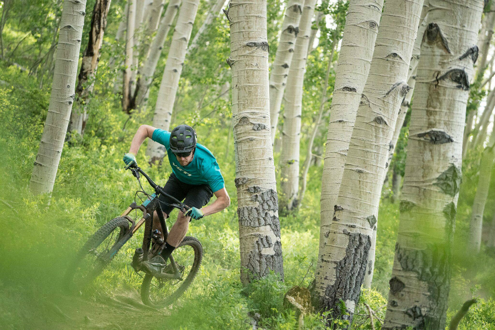

Dark Hollow Tour
 After we drop you off at the peak, you will decend over 3,000 ft through aspens and pines. There is a reason they call it the Dark Hollow tour and as it becomes very tight technical and steep but dont worry if your skill level is not quite there there are bypasses for some of the more technical obstacles. And of course we will be ther